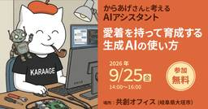
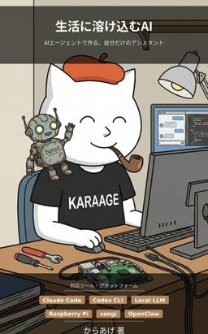

karaage. [からあげ]
https://karaage.hatenadiary.jp/
karaage. [からあげ]
フィード

7年ぶりのFab-coreでAIアシスタントについて話しました
karaage. [からあげ]
画像はFab-core様のイベントページより引用大垣のFab-coreでAIアシスタントについて話しました 2026年9月25日、大垣の「ものづくり空間Fab-core」で「からあげさんと考えるAIアシスタント〜愛着を持って育成する生成AIの使い方」というセミナー＆ワークショップを行いました。 Fab-coreでお話しするのは、2019年のファブコア・カフェでの登壇以来7年ぶりです。前回のテーマは「AIエッジデバイス入門 記録するカメラから思考するカメラへ」。当時は小さな機械の中でAIを動かす話をしました。今回は、日々の仕事や暮らしの中で使いながら育てるAIアシスタントの話です。AIアシスタントを育てるという話 今回は、チャットで質問に答えてもらうところから一歩進んで、自分の記録を探したり、繰り返す作業を任せたりできるAIアシスタントをどう作るか、という話をしました。私が普段使っているAIアシスタント「borot」と、その土台となる「xangi」を例に、記憶、作業の手順、声や画面などのUIについて紹介しました。セミナーとデモをやってみて 当日はセミナーだけでなく、ワークショップ的にxangiのセットアップを含めたデモを参加者と一緒に行いました。こうした形式で長時間進行するのは初めてで、正直なところなかなか難しかったです。 それでも、以前からxangiを知ってくださっていた方には良い反応があり、嬉しかったです。一方で、ビジネスに近い話題の方が結構反応良かったので、そういった話を増やしたほうが良さそうだなという感覚もありました。次の機会があれば、日々の仕事でどう役立つかという事例も入れたいですね。まとめ 7年ぶりのFab-coreで、AIについて話すことができました。自分で作って、使って、直していく楽しさは、2019年にお話ししたころから変わっていない気がします。参加してくださった皆さん、Fab-coreの皆さん、ありがとうございました。 お土産にFab-coreで作ったアクスタをいただきました。これは嬉しいですね。関連記事
2時間前
家族で山中温泉へ行ってきました
karaage. [からあげ]
家族で山中温泉へ行ってきました 9月21日から22日にかけて、妻と娘と石川県の山中温泉へ行ってきました。シルバーウィークの1泊2日の旅行です。 ゆのくにの森で蒔絵を体験したり、温泉に入ったり。帰りにはうさぎとも触れ合ってきたので、写真を交えながら振り返ってみます。ゆのくにの森で蒔絵体験 愛知から車で出発。途中、賤ヶ岳サービスエリアで休憩して、まる天のたこ棒を食べました。揚げたてで美味しかったです。 最初の目的地は「ゆのくにの森」です。 山中蒔絵を体験して、黒いお皿に我が家の猫、ウミとソラをイメージした絵を描きました。 まずは下絵。 お皿に輪郭を写したところ。 赤い線で描いていきます。 仕上がりはこちら。 ちなみに、妻と娘はめっちゃ上手でした。 園内では赤い提灯や、色とりどりの傘が並ぶアンブレラスカイを眺めながら散策。 森の中には、こんなものも。 何かいますね。 森の精霊っぽいものがいました。 最後に、おかしの館でソフトクリームを食べて、宿へ向かいました。河鹿荘で温泉とビュッフェ 今回泊まったのは「山中温泉 河鹿荘」です。 ロビーはこんな感じです。 夕食はビュッフェ。お寿司に炊き込みご飯、すき焼きに揚げ物と、色々食べました。食べすぎました。 温泉も良かったです。サウナと水風呂があり、外には自然を眺めながら休める椅子もありました。好きなサウナも楽しめて、ゆっくりできました。あやとり橋とこおろぎ橋を歩く 2日目は天気にも恵まれて、山中温泉を散策しました。鶴仙渓のあやとり橋とこおろぎ橋を訪れ、ゆげ街道も歩きました。 冒頭の写真はあやとり橋。緑の中に架かる、ちょっと不思議な形の橋です。鶴仙渓の川床は、混んでいたので眺めて満足しました。 途中、アイスを食べて休憩。月うさぎの里へ 帰りには「月うさぎの里」に寄りました。うさぎと触れ合える場所です。 にんじんを食べるうさぎ。 こちらも、もぐもぐ。かわいいですね。AIに旅の計画を手伝ってもらいました 今回の旅行では、自作のAIアシスタント「xangi」にホテル探しや立ち寄り先の調査、しおり作りを手伝ってもらいました。ゆのくにの森や月うさぎの里も、相談して決めた行き先です。 普段はしおりを作るのも楽しみなのですが、今回はあまり時間がなかったので助かりました。私だけでは見つけられなかった場所もあったと思います。 計画はAIに手伝ってもらい
2日前

「生活に溶け込むAI」をv0.5.0へ改訂しました
karaage. [からあげ]
ソフトと一緒に本も育てる 電子書籍『生活に溶け込むAI — AIエージェントで作る、自分だけのアシスタント』をv0.5.0へ改訂しました。今回は、AIアシスタントソフトxangiのv0.56.8に合わせた更新です。 全156ページになり、画面例や説明図を35点追加・差し替えました。 この本では、CodexやClaude CodeなどのAIエージェントを使って、自分の生活に合ったAIアシスタントを作る方法を紹介しています。私が普段使っているAIアシスタントborotも、自作ソフトのxangiで動いています。 初版を出したのは2026年2月でした。7月にv0.3.0を紹介したときは、AIアシスタントに渡す記憶やスキルをどう残して育てるか、という話を書きました。 その後もxangiに機能を足していたら、本のほうも追いかける必要が出てきました。今回はborotに、ソフトの更新に合わせて本も改訂するように依頼しました。途中で「xangi rescueも入れたい」「xangi-petsも応用コラムに欲しい」と追加しています。 新しい機能の中でも、この2つは「生活に溶け込むAI」という本の名前に合っていると思うので、少し詳しく紹介します。ブラウザから触れるところが増えました 以前からxangiはDiscordやSlackなどのチャットから使えましたが、今はWebブラウザからも、会話、ファイルの閲覧・編集、設定、予定の管理まで進められます。 Web Chatで2つの会話を並べた例です。この記事のWeb画面は、公開版のUIに説明用の会話や予定を入れて撮影しています。 たとえば、日々の相談と、週末に作るものの相談を別々に開いておけます。AIが作ったMarkdownやHTMLもブラウザから確認できるので、会話の結果をファイルとして残し、そのまま読んだり直したりする流れが分かりやすくなりました。 こうなると、会話やファイルの置き場所も整理したくなります。そこで本では、会話をまとめるProjectと、記録やスキルなどのファイルを置くWorkspaceの違いも図にしました。 暮らしの相談とものづくりで、指示や作業場所を分ける例です。会話をまとめる単位と、ファイルを置く場所を分けて考えると、後から使い方を広げやすいと思います。 このほか、実行中の仕事を見るMonitor、会話履歴、予定の管理、拡
3日前
お散歩ポッドキャスターの必須機材を紹介します 2
2
karaage. [からあげ]
お散歩しながらのポッドキャスト収録を続けています 「からあげ帝国放送局」というポッドキャストを配信しています。基本的には、朝に近所の公園を散歩しながら収録しています。 音声配信は今回が3回目のチャレンジです。過去2回は続かなかったのですが、今回は150回を超えました。もともとあった散歩の習慣に収録を組み込んだことが、続けられている大きな理由だと思います。 先日の第156回では、そんな私の収録方法と機材について話しました。せっかくなので、ブログにもまとめておきます。#156 散歩とAIでポッドキャストを156回続ける仕組み 今回は、散歩しながら収録する「お散歩ポッドキャスター」向けの話です。私が実際に使っているものを中心に紹介します。機材紹介なのに、最初に出てくるのは靴です。※この記事にはAmazonアソシエイトのアフィリエイトリンクが含まれています。まずは歩いていて気持ちのいい靴 最初の必須機材は靴です。ポッドキャストの機材なのかという疑問はあると思いますが、私にとっては重要です。散歩に行かなかったら、収録も始まりませんからね。 愛用しているのは、SAGUAROのベアフットシューズです。靴底が薄く、足の裏に地面の感触が伝わってくるタイプの靴ですね。 購入のきっかけは、歩く習慣についての本を読んでベアフットシューズが気になり、AIアシスタントに相談したことでした。いくつか候補を出してもらい、試しに買ってみたら、これが私には合っていました。 公園を歩いていると、足の裏に適度に感触が伝わってくるのが気持ちいいです。このあたりは第29回の「散歩はサイコー」でも話しています。#29 散歩はサイコー もちろん靴は相性があるので、同じものを買う必要はありません。私も以前から、手軽に履けるスリップインタイプの靴を気に入って使っていました。まずは、履いたら外に出たくなる靴があると良いと思います。[SAGUARO] メンズ レディース ベアフット フィットネスシューズ 幅広 トレーニング 室内 通気 軽量 筋トレ ジムシューズ 26.5cmSAGUAROAmazon帽子と長袖で散歩の準備をする 次は服です。まだ録音機材にたどり着きません。 夏の散歩では、日差しへの対策も必要です。私は大きめの帽子をかぶり、長袖のシャツを着て、日焼け止めも使っています。汗をかくので、着替えの分もあると助か
6日前

『みのるん式 Claude Code仕事術』でAIアシスタント活用の答え合わせ
karaage. [からあげ]
みのるん式Claude Code仕事術を読みました みのるんさんこと御田稔さんの新刊『みのるん式 ビジネスパーソンのためのClaude Code仕事術』をご恵贈いただきました。 正直にいうと、読む前は「最近Claude Codeを使ってないし、あんまり参考にならないかも」と少し思っていましたが、読み始めると面白くて、この手の本としては久しぶりに一気に最後まで読んでしまいました。 感想を一言でまとめると、現時点におけるAI活用法の決定版とも言える本な気がします。私にとっては、新しい知識を得られる本であると同時に、自分が続けてきたAI活用の答え合わせをする本にもなりました。みのるん式 Claude Code仕事術。ご恵贈賜りました。この手の本で久しぶりに一気に読み切りました。それほど凄い面白くて良かったです。AI活用法の現時点の決定版といって良い本かなと思います。おこがましいかもですが、2026年版の「面倒なことはChatGPTにやらせよう」といえる本かも #みのるん式 pic.twitter.com/XNBMuTykmJ— からあげ (@karaage0703) 2026年9月11日 ［みのるん式］ビジネスパーソンのためのClaude Code仕事術作者:御田 稔技術評論社AmazonClaude Codeだけの本ではない タイトルにはClaude Codeとありますが、感覚では内容の8割以上はCodexなど、ほかのAIエージェントでも活用できるものでした。Claude Code特有の部分は、料金プランやセットアップ、サブエージェントくらいではないでしょうか。 何でもAIへ相談する。人間とAIを組み合わせて仕事を半自動化する。作業の中で得た知識をファイルや手順として残す。同じ仕事場を使い続けて、AIが参照できる文脈を育てる。このあたりは、使っているAIエージェントが変わってもそのまま使える考え方だと思います。 AIの世界は変化が速いので、特定の画面や機能だけを説明した本は、どうしても寿命が短くなりがちです。その点、本書は道具が変わっても残る仕事の進め方に踏み込んでいます。Claude Codeを使っていない人にもおすすめしやすいと感じました。自分の使い方との答え合わせ 私は自作のAIアシスタントソフト「xangi」を使い、AIアシスタントのborotと毎日のように会話
12日前
「Maker Faire Tokyo 2026」Seeedさんブースで出展のお手伝いをしてきました
karaage. [からあげ]
Maker Faire Tokyo 2026に参加しました 2026年9月5日と6日に有明GYM-EXで開催された「Maker Faire Tokyo 2026」に、2日間参加してきました。 今回も昨年に続いて、Seeedさんブースで出展のお手伝いです。展示したのは、おなじみの「AIワニワニパニック」でした。今日はSeeedさんブースで展示のお手伝いしています。SP02の角になります。私の目印はネームカードみてください！ pic.twitter.com/hB0somUfCO— からあげ (@karaage0703) 2026年9月5日 AIワニワニパニック展示してます pic.twitter.com/STt2nlcMPX— からあげ (@karaage0703) 2026年9月5日 出展の合間には、今年も会場を見て回りました。全部は見切れませんでしたが、触って楽しいものから、どうやって作ったのか気になるものまで、今年も面白い展示がたくさんありました。2年目のAIワニワニパニック AIワニワニパニックは、Seeedさんが販売しているSO-101という小型ロボットアームで、ワニワニパニックを叩く展示です。 昨年のMaker Faire Tokyo 2025や、Kariya Micro Maker Faire 2026でも展示しました。以前はAI画像認識＋決め打ちモーションでしたが、今回は模倣学習でのワニワニパニックにしました。 技術的な詳細は割愛しますが、スピードや成功率的にはイマイチなものでした。Maker Faireレポート 今年の会場は有明GYM-EXでした。広くて開放的で、隣には公園もあり、家族連れでも過ごしやすそうな場所でした。 会場では、空を飛ばないホバーボードのような乗り物が走り回り、ロボットや恐竜も歩いていました。少し先の未来と、よく分からない何かが同時に押し寄せてくる感じです。Maker Faireらしい雰囲気で良かったです。 展示のお手伝いの合間に見て回ったので一部だけですが、気になった作品を紹介します。見て触って楽しめる展示 デイリーポータルZさんの展示。デイリーポータルZさんのアホのルービックキューブロボットめちゃ面白いw #MFTokyo2026 pic.twitter.com/kwLW5FKkA9— からあげ (@karaage0703) 2
19日前
『AIエージェントと本をつくる技術』を書きました
karaage. [からあげ]
AIと一緒に本をつくる本を書きました 『AIエージェントと本をつくる技術』という本を作りました。Claude CodeやCodexといった、普段はソフトウェア開発で使われることが多いAIエージェントと一緒に本を作る方法をまとめた技術同人誌です。 AIに文章を全部書かせて、手早く本を量産しようという本ではありません。AIに企画、調査、構成、編集、図版、校正、組版といった役割を持ってもらい、個人でも小さな出版チームのように本を作ろう、という本です。 書籍はBOOTHで販売しています。JIS B5判90ページのPDFとEPUBのセットで、価格は1,000円です。本作りを始めるためのテンプレートはGitHubで無料公開しています。きっかけは技術同人誌の勉強会 この本を書き始めたきっかけは、2026年7月に参加した「技書博キャラバン in 名古屋」でした。このイベントについては、以前ブログに詳しく書いています。 イベントの「技術同人誌を書こうハンズオン」に参加し、AIを使いながら企画を考えて、その場で原稿を書き始めました。約1時間のワークショップで約50ページ、3万字まで進み、帰宅するころには6万字近くになっていました。 この時点での仮タイトルは『AIエージェントと本を書く技術』でした。その後、内容が執筆だけでなく、素材集め、図版、組版、販売、改訂まで本作り全体へ広がったため、正式タイトルを『AIエージェントと本をつくる技術』に変更しました。 もちろん、それで本が完成したわけではありません。最初にできた文章を何度も読み直し、構成を変え、説明を足し、不要な部分を削り、図を作り直しました。最終的には最初の原稿とはかなり違う本になっています。 この体験で分かったのは、AIを使う価値は単に執筆速度を上げることだけではない、ということです。個人出版にもチームが欲しい 以前、カレーちゃんさんとの共著で『面倒なことはChatGPTにやらせよう』という商業書を書きました。この本を作ったときは、共著者のカレーちゃんさん、編集者の大橋さん、私の3人でチームを組み、役割を分担しながら作ることができました。 書き上げた原稿に大橋さんから厳しいチェックをもらい、修正を繰り返しました。カレーちゃんさんからは私とは違う専門性や視点が加わりました。自分では気づかなかった問題を指摘してもらったり、別の視点から
1ヶ月前
AI上司とローカルLLM部下でトークンを節約できるか試した
karaage. [からあげ]
AIの利用枠を使い切りました 先週、契約しているChatGPT Proの利用枠を使い切りました。月額200ドルで、今まで使い切ることなかったのですが、先週はAIアシスタントソフトの「xangi」の開発やAIでDJ・VJするソフトを作ったりしていて見事に上限へ到達しました。 使えなくなったのは2日ほどだったのですが、これがなかなかつらかったです。以前、音声配信で自分のことを「AIジャンキー」と表現していたのですが、AIが使えなくなると本当に不安になってきて手が震えきたので、ほぼ中毒者でした。 この体験をきっかけに、トークンの節約やローカルLLMの活用を本気で考えてみました。AI動作環境の整理 私は最近、NVIDIAのDGX SparkでQwen3.8-27B-NVFP4（以降Qwen3.8）を動かしています。かなり優秀なモデルなのでChatGPTが使えなくなったときも「ローカルLLMがあるから大丈夫」と思っていたのですが、実際に代役を任せてみると、最初は全然ダメでした。 「こんにちは」の返信に5分弱かかる始末です。到底実用できません。 原因を調べると、モデルだけの問題でなく、AIを働かせる環境が複雑になりすぎていました。長いシステムプロンプト（AGENTS.md）、大量のツール、大量のスキル、積み上がった例外ルール。GPT-5.6 Solのような高性能なモデルは、多少散らかった環境でも空気を読んで仕事を進めてくれます。そのため、環境側の問題が表面化していなかったのです。 人間の組織でも、能力の高い人が個人技で何とかしているうちは、手順や環境の問題が隠れがちです。そこへ新しい人が入ると急に仕事が回らなくなり、初めてオンボーディングや道具の整備が必要だと気づきます。AIでも同じことが起きるのが面白いですね。 そこで、最初に渡す指示を圧縮し、使うツールを整理し、仕事の入口を分かりやすくしました。これはローカルLLMのためだけではなく、高性能なモデルの迷いを減らし、入力トークンを削減する効果もあります。 今回使ったモデルやDGX Spark上での動かし方、推論エンジンごとの実測結果は、以下の記事にまとめています。GPT Solを上司Qwenを部下にしてみる 次に試したのが、GPT-5.6 Solを監督役にして、実際のコーディングをQwen3.8へ委譲する構成です。高性能なクラ
1ヶ月前
「xangi-search」でAIエージェントの入力トークンを約72%削減
karaage. [からあげ]
AIエージェントの「記憶」をどうするか 自作のAIアシスタント「xangi」を、毎日のように使っています。 xangiは、CodexやClaude CodeなどのAIエージェントをDiscordやWebブラウザから使えるようにするソフトです。私は日記やメモ、過去の会話、開発記録などをワークスペースに保存して、AIエージェントから参照できるようにしています。 便利なのですが、記録が増えるほど、必要なときに見つけるのが難しくなります。 そこで、ワークスペースを検索するxangi用の拡張機能「xangi-search」を作りました。 xangi-searchは、ファイルの全文検索と意味検索を組み合わせて、過去のメモや記録をローカルで探すソフトです。検索処理そのものにはLLMを使わず、検索用の索引や設定もワークスペース内に保存します。長く覚えておきたい内容を「FACT」として保存する機能もあります。xangiなしでもWeb UIやCLIから検索できる xangi-searchは単体のWeb UIとCLIを備えています。ブラウザで検索語を入力すると関連ファイルと該当部分が表示され、AIを起動せずローカル検索ツールとして使えます。 xangiへ組み込むと、AIエージェントが同じ検索機能を呼び出せます。xangiのWeb Chat、Discord、Slackから「過去の記録を探して」と会話で依頼できます。xangi-searchが各チャットへ直接接続するのではなく、xangiが検索を仲介する構成です。『検索システム』を読んで検索を基礎から学び直した xangi-searchを作るきっかけの一つになったのが、佐藤竜馬さんの書籍『検索システム なぜ検索システムは欲しい情報を見つけられるのか、あるいはなぜ見つけられないのか』です。検索システム なぜ検索システムは欲しい情報を見つけられるのか、あるいはなぜ見つけられないのか (KS情報科学専門書)作者:佐藤 竜馬講談社Amazon 正確には、本を読んでからxangi-searchを作り始めたわけではありません。先にAIと一緒に検索機能を作って使っていたものの「検索って重要だな」と改めて思い、網羅的に検索について知りたくなり本を買いました。 私はRAGやベクトル検索については知っていましたが、キーワード検索の仕組みや評価方法といった基本は抜
1ヶ月前
4Gスマホなのに電話ができなくなった！IIJmioの3G終了をきっかけに「moto g66j 5G」へ買い替え
karaage. [からあげ]
IIJmioのSIMで突然電話ができなくなった 仕事用のサブ携帯として使っていたAndroidスマートフォンで、いつの間にか電話ができなくなっていました。全然繋がらなかったですと人に教えてもらって気づきました（申し訳ありません…） 使っていたのは「Blackview A52」というSIMフリーのスマートフォンです。2023年10月に買い替えて、IIJmioのタイプD（ドコモ回線）のSIMを入れて使っていました。以前は電話できていた記憶があるので、最初は設定がどこか変わったのか、SIMカードがおかしくなったのかと思いました。原因はドコモの3G終了とVoLTEの組み合わせ 調べてみると、どうもこの3G（FOMA）サービス終了が原因のようでした。NTTドコモの3G（FOMA）は2026年3月31日に終了しています。IIJmioのタイプDでも、2026年4月1日以降は3Gでの音声通話とデータ通信が使えなくなりました。 ここでややこしいのが「4Gに対応しているスマートフォンなら大丈夫」とは限らないことです。4G回線で音声通話をするにはVoLTEが必要です。IIJmioも、4G対応端末でもVoLTEの設定がOFFの場合は音声通話が利用できなくなると案内しています。 ただ、Blackview A52の設定画面でVoLTEを探しましたが、該当する設定が見つかりませんでした。電話アプリから「##86583##」を入力する方法も試しましたが、状況は変わりませんでした。 何か頑張れば繋げる方法あったのかもしれませんが、自分は通信事情は詳しくないので、AIに調べてもらってやり方が分からないと言われたので諦めました。「moto g66j 5G」に買い替え いくつか候補をAIに調べてもらって、モトローラの「moto g66j 5G」を購入しました。 IIJmioはSIMフリー版のmoto g66j 5Gについて、音声SIMのタイプD/Aともに、音声通話・データ通信・テザリングの動作確認結果を公開しています。nanoSIMとeSIMに対応しているので、今までのnanoSIMをそのまま移せます。 moto g66j 5Gは8GBのメモリと128GBのストレージを搭載しています。防水・防塵、おサイフケータイにも対応しています。サブ携帯としては十分すぎるくらいですが、普段使いでも困らなさそうなバランス
1ヶ月前
苗木城の取材からAI漫画「風雲！苗木城」ができるまで
karaage. [からあげ]
AIで66ページの漫画「風雲！苗木城」を作りました AIを使って、本編66ページの漫画「風雲！苗木城」を作りました。 漫画はnoteで全部無料公開しています。よかったら、まずはこちらを読んでみてください。 今回は岐阜県中津川市にある苗木城へ実際に行って、現地で撮った写真、城に残る伝承、私が描いた信じられないくらい雑なラフスケッチをAIへ渡して作りました。 以前にもAI漫画を作ったことがありますが、そのときと比べると作り方が大きく変わりました。前回は1ページずつ苦労して描いていたのに、今回は自分が売れっ子漫画家の編集者になったような感覚で、66ページを作ることができました。AI漫画を書くために苗木城に取材に行く 苗木城は、木曽川を見下ろす岩山に築かれた山城です。天然の巨岩を利用した石垣が特徴的で、城跡からの眺めもかなり良いです。2026年は築城500年にあたります。 前から行きたかった場所でしたが「ここを舞台に漫画を作ったら面白いかも」とふと思い立ち、実際に現地に行ってみて取材して漫画を描き上げました（AIで）1ページずつの作画からAIエージェントへ AIで漫画を作るのは、今回が初めてではありません。2025年末には、Nano Banana Proを使ってSF漫画「青の箱庭」を作りました。 「青の箱庭」は、20ページを1ページずつ生成して作りました。キャラクターの参考画像とページごとの指示を毎回送り、気に入らないページを何度も作り直したので、かなり大変でした。 今回は、自分で開発しているAIアシスタントソフト「xangi」とOpenAIのCodexを使いました。 前回は20ページへかかりきりでしたが、今回は3倍以上となる66ページを、体感では同じくらいの時間で作れました。しかも、私が作業へ張り付いている時間は大幅に減っています。 まさに、売れっ子漫画家の編集者になった気分です。「ここを直してください」「この展開は分かりにくいです」とお願いして、あとは出来上がるのを待つだけです。 詳しい制作方法や、私が描いたラフスケッチ、現地で撮影した写真は、noteの投げ銭特典として簡単に載せています。あくまでおまけなので、漫画を気に入って応援したいと思った方に見てもらえたらうれしいです。まとめ 苗木城へ行って漫画を思いつき、現地写真と雑なラフスケッチをAIへ渡したら、本編66ページ
1ヶ月前
復刊した「横井軍平ゲーム館」を読んで改めて「枯れた技術の水平思考」について考えた
karaage. [からあげ]
ずっと読みたかった『横井軍平ゲーム館』を読みました 横井軍平さんの『横井軍平ゲーム館 ―「世界の任天堂」を築いた発想力』を読みました。横井軍平ゲーム館: 「世界の任天堂」を築いた発想力 (ちくま文庫 よ 29-1)作者:横井 軍平,牧野 武文筑摩書房Amazon この本、実はかなり昔から読みたかった本です。一時期はプレミアがついて数万円になっていて、さすがに手が出ませんでした。2018年に横井軍平さんの記事を書いたときも、図書館で見つけた別の伝記を読んでいました。 その後、ちくま文庫から復刊されて手頃な価格で買えるようになっていたことを、ナル先生の投稿で知りました。見た瞬間、電光石火で購入。電子書籍は見当たらなかったので、久しぶりに紙の本を買いました。「横井軍平 ゲーム館」はオススメです。成り上がりストーリーがヤバい https://t.co/ZuGZt7O1Zu— Null-Codex (@GOROman) 2026年7月5日 横井軍平さんは、ウルトラハンド、ゲーム＆ウオッチ、ゲームボーイなどを生み出し、花札の会社だった任天堂が世界的なゲーム会社へ変わっていく時代を支えた開発者です。本書は横井さんへのインタビューをもとに、数々の製品が生まれた経緯と、その背後にあった考え方をたどる内容になっています。暇つぶしで作ったものが任天堂を変えた 特に面白く有名なのは、ウルトラハンド誕生のエピソードです。 横井さんは任天堂に入社後、設備の保守を担当していました。時間に余裕があったため、伸び縮みする手のようなおもちゃを作って遊んでいたところを、社長の山内溥さんに見つかります。 普通なら「仕事中に何をやっているんだ」と怒られて終わりそうな場面です。ところが山内さんは、それを面白がって商品化を命じました。これがヒット商品「ウルトラハンド」につながり、横井さんは次々と新しい玩具を作ることになります。 横井さんの発想力はもちろん凄いのですが、それを見つけて「商品にしろ」と言える山内さんも凄いですね。面白いものを作る人だけでなく、まだ形になっていない才能を見つけて、自由にやらせる人がいた。今の任天堂につながる物語は、この組み合わせから始まったのだと思いました。「枯れた技術」は古い技術ではない 横井軍平さんといえば、やはり「枯れた技術の水平思考」です。 ここでいう「枯れた技術」は、役に立た
2ヶ月前
ナムジュン・パイク「じゅげむ展」に行ってきた。見た目も楽しく背景を知るともっと面白い
karaage. [からあげ]
ナムジュン・パイク「じゅげむ展」に行ってきました 東京のワタリウム美術館で開催されている「没後20年 ナムジュン・パイク｜じゅげむ展」に行ってきました。 ナムジュン・パイクは、テレビや映像を早くから作品に取り入れた、ビデオアートの先駆者として知られるアーティストです。名前や作品は以前から知っていましたが、まとまった展示を見るのは今回が初めてでした。 展示見た感想としては、めちゃくちゃ良かったです。 古いブラウン管テレビ、植物、魚、ロボット、ろうそくなどが組み合わさっていて、見た瞬間に「何だこれは」と楽しくなります（岡本太郎みがありますね）。現代美術というと、説明を読まないと分からなくて身構えてしまうこともありますが、パイクの作品は、何も考えず見て楽しめます。テレビが植物の中から生えていたり、水槽の中で本物の魚と映像が重なったりします。テレビと自然がごちゃ混ぜになった不思議な世界 会場は2階から4階まであり、それぞれ「森」「縁」「心」をテーマに作品が構成されていました（後でAIに教えてもらいました）。 特に印象に残ったのが、植物の中にたくさんのテレビが置かれた《TV Garden》です。今では映像と植物を組み合わせた展示は珍しくないかもしれませんが、パイクはずっと前から自然とテクノロジーを同じ空間に置いていました。 テレビを自然の反対側にある人工物として扱うのではなく、植物や動物と一緒に生きる奇妙な生物のように見せているのが面白いです。古いブラウン管が苔むした石やキノコのようにも見えてきます。 生きた魚が泳ぐ水槽に映像を重ねた《TV Fish》も面白かったです。本物の魚の向こう側に人の映像が流れていて、魚と映像のどちらを見ているのか分からなくなってきます。画面と現実をきれいに分けられない感覚は、スマートフォン越しに世界を見ることが増えた現在では、さらに身近なものになっていますね。人間の仕事を増やすロボット 個人的に気になったのは《ロボットK-567》です。1964年に制作されたアートロボット《K-456》の娘として、1993年に作られた作品とのことです。 作品の説明には、人間のように歩き、歌い、排泄すると書かれていました。そしてパイクは普通のロボットは人間の仕事を減らすために作られるが、自分のロボットは人間の仕事を増やすためにある という趣旨の言葉を残しています。 私
2ヶ月前
技書博キャラバン in 名古屋で「育てる技術同人誌」の話をしてきました
karaage. [からあげ]
「俺の勉強会×技書博」に登壇しました 2026年7月26日（日）、株式会社スタメンさんの名古屋本社で開催された「【俺の勉強会×技書博】技書博キャラバン in 名古屋」に参加してきました。 おしゃれな会場でした。 会場について思い出したのは、8年くらい前にスタメンさんの会場に来ていたことです。2018年12月の「IoTLT名古屋 vol.9」で、前日に誘われて人生初の勉強会登壇をした場所でした。 初登壇の会場に、今度は技術同人誌の話をする登壇者として戻ってきたことになります。8年前からは私も周りも色々変わりました。人生、何がつながるか分からないものですね。無料イベントなのに、いきなり本が増える 受付して、いきなり大量のお土産をいただきました。[:640] 技術同人誌や冊子、缶バッジなどが山盛りです。「エンジニアがこの先生きのこるためのカンファレンス2026」トートバッグまでいただきました。 無料イベントのはずなのに、来た瞬間から本が増えています。とんでもないイベントです（笑）「育てる技術同人誌のススメ」というタイトルで登壇しました 私は「本は書いて終わりじゃない！育てる技術同人誌のススメ」というタイトルで、25分ほどお話しました。 2026年上半期に出した以下の電子書籍4冊を題材にした発表です。『生活に溶け込むAI』『AIエージェントは事故る』『からあげ帝国放送局 Vol.1』『からあげ帝国放送局 Vol.2』 スライドは以下となります。 参加した方に「本のネタは、既に皆さんの手元にあるかもしれません」ということが伝わっていたら幸いです。技術同人誌は、特別な人だけが書くものではない イベントでは、技術書づくりの全体像を知るセッションと、書いてみたい本のたたき台を考えるハンズオンが行われました。 特に印象に残ったのが「執筆はクリエイティブ1割、機械的作業9割」という話です。テーマを決めて、読者を考えて、構成を作り、少しずつ文章にしていく。本というと大仕事に見えますが、工程を細かく分けると、実際の作業の多くは一つずつ進められるものになります。 これは私が最近AIエージェントと本を作っている感覚にも近いです。人間が自分の経験や伝えたいことを出し、最終的な判断と責任を持つ。一方で、素材集め、構成のたたき台、校正、組版などの機械的な部分はAIエージェントに手伝ってもらえます。
2ヶ月前
「Hamamatsu Micro Maker Faire 2026」見学レポート
karaage. [からあげ]
「Hamamatsu Micro Maker Faire 2026」に行きました 「Hamamatsu Micro Maker Faire 2026」に行ってきました。今回は出展ではなく、見学のみです。 会場は浜松科学館で、2026年7月4日（土）10:00〜17:00に実施されました。浜松は愛知から車で行きやすい距離なので、Seeedのmatsujirushiさんに車で乗せていってもらいました。感謝です。#HamamatsuMMF2026 に向かってます。出展はなくて、見学だけです https://t.co/olL5PPGflk— からあげ (@karaage0703) 2026年7月4日 着きました #HamamatsuMMF2026 pic.twitter.com/4rJ8Fiz1cD— からあげ (@karaage0703) 2026年7月4日 Hamamatsu Micro Maker Faireには2022年、2024年、2025年にも参加していて、2024年と2025年はSeeedさんブースのお手伝い中心でした。今年は完全に見る側だったので、気楽に会場を回れたのが良かったです。「Hamamatsu Micro Maker Faire 2026」レポート まず面白かったのが、浜松の運動会文化「城落とし」を再現した展示です。地域の文化をものづくりで再現するの、かなり良いですね。浜松の運動会の独自文化、城落としを再現しているらしいです。そんな珍文化あるの知らなかったです #HamamatsuMMF2026 pic.twitter.com/NOBV3aYxGw— からあげ (@karaage0703) 2026年7月4日 アナログテープレコーダーのテープを手動で読み取って再生するデバイスも良かったです。こういう「そんなことできるの？」という展示は、Maker Faireらしくて好きです。アナログのテープレコーダーのテープを手動で読み取って再生するデバイス。中身はコイルとアンプのみとのこと。面白い！ #HamamatsuMMF2026 pic.twitter.com/KJigDBdmmo— からあげ (@karaage0703) 2026年7月4日 浜松といえば、やっぱり音関係の展示が強い印象があります。過去のHamamatsu Micro Maker Fair
3ヶ月前
「生活に溶け込むAI」v0.3.0をリリースしました
karaage. [からあげ]
「生活に溶け込むAI」v0.3.0をリリースしました 電子書籍「生活に溶け込むAI — AIエージェントで作る、自分だけのアシスタント」のv0.3.0をリリースしました。 この本は、ChatGPTのようなAIを、単発で使う便利ツールから、自分の生活に溶け込むAIアシスタントへ育てていくための本です。Raspberry PiやAIエージェント、Discord/Slackのようなチャット環境を使いながら、自分だけのAIアシスタントを作る方法をまとめています。 初版を出したのは2026年2月でしたが、その後の数か月でAIエージェントまわりの状況がかなり変わりました。自分自身もClaude CodeからCodexに乗り換えたこともあり、自分で作っているAIアシスタントフレームワークxangiも、複数のAIエージェントに対応し、DiscordだけでなくSlack、Web、LINEなどにも対応しています。 それらの変化を反映して、今回かなり大きめにアップデートしました。今回のアップデート内容 v0.3.0では、主に以下の内容を追加・更新しています。Codex CLI、Claude Code API key mode、複数AIエージェントバックエンド対応GitHub操作をAIアシスタントに任せるときのGitHub App認証、PAT、gh auth loginの使い分けai-assistant-workspaceの最新構成に合わせた説明の更新xangiのDiscord / Slack / Web / LINE対応xangiのバックエンド切り替え、イベントトリガー、長時間処理、Docker運用/autoreplyと/threadmodeの説明AIダイエット、workspace-web-editor、xangi-stackchan、Even G2連携の応用例xangi v0.39.0時点の構成に合わせたアーキテクチャ図の更新AIアシスタント作りは「ツール選び」から「育て方」へ この数か月で、自分の中でも考え方が少し変わってきました。 以前は「どのAIエージェントツールを使うか」が重要でした。Claude Codeを使うのか、Codex CLIを使うのか、あるいはローカルLLMを使うのか、という話です。 もちろん今でもツール選びは大事です。ただ、それ以上に大事なのは、AIアシスタントに
3ヶ月前
2026年上半期の振り返り
karaage. [からあげ]
2026年上半期の振り返り 2026年も早いもので半分が過ぎました。去年から半期ごとに振り返るようになったので、今年も上半期を振り返ってみたいと思います。 今年は、年始に「今年は少し落ち着いていこう」みたいなことを思っていた気がします。たぶん毎年そう思っているのですが、結果としてはあんまり落ち着いていませんでした。結構密度の高い半年になりました。 今回の内容は、からあげ帝国放送局の第118回でも話しています。本記事はその文章版という位置づけです。からあげ帝国放送局を始めました まず、今年一番大きかったのは音声配信「からあげ帝国放送局」を始めたことです。1月11日に第1回を配信して、6月30日時点で第118回まで来ました。 毎朝の散歩中に、技術の話、AIの話、個人開発の話、生活の話などをしゃべっています。最初は「続くのかな」という気持ちもありましたが、散歩とセットにしたのがよかったのか、気づいたら100回を超えていました。 5月末には第100回も迎えました。1回ごとの配信は10分から20分くらいですが、100回を超えると、かなりの量になります。自分の考えや活動ログが音声として積み上がっていく感覚は、ブログとはまた違って面白いですね。 音声配信を始めたことで、話すこと自体の訓練にもなりましたし、文字起こししてブログや電子書籍に再利用する流れもできました。まさに「しゃべること」がコンテンツの入口になってきた半年でした。AIアシスタントと生活する半年 2月には、自作AIアシスタントフレームワーク「xangi」を公開しました。もともとからあげ帝国で動かしていたkaraagebotや、自分の相棒として使っているborotの流れを、少しずつ外に出していった形です。 その流れで、2月末には技術同人誌『生活に溶け込むAI』を出しました。 この本は、Discordに常駐するAIアシスタントを自分で作って、生活や発信、開発に組み込んでいく話です。個人で出した技術同人誌としては、かなり多くの方に読んでもらえていてありがたいです。 xangiやborotは、単なるチャットボットというより、生活に溶け込む相棒として存在感を増してきました。朝に予定やニュースを見たり、食事や体重を記録したり、ソフト開発をしたり、ポッドキャストやブログの素材整理をしたり。2026年上半期は、AIアシスタントを「作る
3ヶ月前
「NT金沢2026」に参加！Stackchan MonjuをProtoPediaブースで展示しました
karaage. [からあげ]
NT金沢2026に参加しました NT金沢2026に参加してきました。今年もProtoPediaさんのブースで出展させていただきました。 NT金沢2026は、2026/6/27（土）、28（日）に金沢駅東もてなしドーム地下広場で開催された、Maker系の展示イベントです。詳細は以下のページを参照ください。 NT金沢は規模感、距離感、カオス感がほどよくて、いつも参加しているイベントです。展示内容 今回展示したのは「Stackchan Monju」です。 3体のスタックチャンが、ローカルLLMで1つのテーマについて順番に議論するデモです。ローカルLLMで議論を生成し、ブラウザの吹き出しUIに表示しながら、3体のスタックチャンがそれぞれの人格でしゃべります。 展示では「からあげにレモンをかけたら死刑ですか？」という深淵なるテーマを投げていました。NT金沢2026レポート 以下はレポートです。いつものように、ツイートの貼り付け中心です。自分のものも他の人のものも混じっています。0日目・移動と到着2026/6/27（土）-28（日）の #NT金沢 では #ProtoPedia さんのブースでスタックチャンが文殊の知恵を出す「Stackchan Monju」を展示予定です。DGX Spark持ち込んで完全ローカルで動かしますhttps://t.co/PtYA9Rne6T— からあげ (@karaage0703) 2026年6月26日 #NT金沢 電車が止まったことを知り絶望してましたが、AIに相談したら高速バスで行けると教えてもらいました。なんとか辿り着けそうです— からあげ (@karaage0703) 2026年6月26日 #nt金沢 同じくProtoPediaブースでは、からあげさんのスタックチャン達が「からあげにレモンかけるか」について、ディスカッション中 pic.twitter.com/EGPjPn2Upc— ばんのー #ハッカソン 屋さん (@about40man) 2026年6月27日 バスで金沢行きます #NT金沢 pic.twitter.com/gBk1FpOSVm— からあげ (@karaage0703) 2026年6月26日 C3の #ProtoPedia で展示させてもらう予定です #NT金沢 https://t.co/O860870kUJ— からあげ (
3ヶ月前
ポッドキャスト「からあげ帝国放送局 Vol.2」を電子書籍にしました
karaage. [からあげ]
ポッドキャスト「からあげ帝国放送局 Vol.2」を電子書籍にしました 毎朝の散歩中に収録しているポッドキャスト「からあげ帝国放送局」の第51話〜第100話を、1冊の電子書籍にまとめました。BOOTHで販売しています。 以前、第1話〜第50話をまとめたVol.1を出したのですが、気づいたら第100回まで到達していました。音声配信、続くものですね。自分でもちょっと驚いています。どんな本？ 散歩しながら喋った内容を、AIで編集して読みやすくまとめた本です。Vol.2のテーマは「AIとものづくりと」です。 スタックチャン開発、ローカルLLM、DGX Spark、自作AIアシスタントxangi、個人開発、イベント登壇、音声配信を続けてみて分かったことなど、ここ数ヶ月で話してきた内容がまとまっています。 ポッドキャストを聴く時間がない方や、あとからまとめて読み返したい方にちょうどいいと思います。音声だと流れていってしまう話も、文章にするとまた違った見え方になるのが面白いですね。 今回は巻末にスペシャルコラム「AIとものづくりの境界が溶けていく」も収録しています。第51話〜第100話を振り返りながら、AIとものづくりについて考えたことを書きました。AIで作りました この本も、制作の大部分をAIが担当しています。LISTENの文字起こし → AIが口語を文語に変換・構成整理 → PandocとTypstでPDF/EPUB生成 という流れです。私がやったのは、毎朝喋ること、最終チェック、表紙の用意、細かい表記ゆれの修正くらいです。 そのまま文字起こしを貼るだけでは読みにくいので、AIに口語から文語への変換、見出し付け、冗長な部分の整理をしてもらっています。ここはAIがかなり得意なところだと思います。購入はこちら BOOTHで販売しています。価格は300円です。 ポッドキャスト本編はこちらから無料で聴けます。本と合わせてお楽しみください。公式サイト: https://karaage-empire-radio.pages.dev/LISTEN: https://listen.style/p/karaage0703まとめ からあげ帝国放送局Vol.2を電子書籍にしましたというお知らせでした。 音声配信は、単体だとどうしても聴く時間が必要なメディアですが、こうして電子書籍にすると、また違う形
3ヶ月前
Zennfes Spring 2026で「生活に溶け込むAI」について話してきました
karaage. [からあげ]
2026年6月20日に開催された Zennfes Spring 2026 で、「生活に溶け込むAI 〜AIアシスタントを自作しよう〜」というタイトルで登壇してきました。イベントのConnpassページはこちらです。Zennfesにきました#zennfes pic.twitter.com/o4nbas50B1— からあげ (@karaage0703) 2026年6月20日 勝手にこじんまりしたイベントを想像していたのですが、めっちゃしっかりしてました。緊張で帰りたいです #zennfes— からあげ (@karaage0703) 2026年6月20日 スポンサーブースのスタンプラリーで Zenn ハンカチもゲット。スポンサーブースをスタンプラリーしてZennハンカチもらいました #Zennfes pic.twitter.com/lzcDcJWvo5— からあげ (@karaage0703) 2026年6月20日 自分の発表 今回の発表資料は以下です。 関連するリンクを記載しておきます。他のセッションで印象に残ったこと自分の登壇以外も、AIと技術発信の関係を考えさせられるセッションが多く面白かったです。以下自分が気づいた当日の資料リンクだけはります。 まとめ Zennfes Spring 2026に登壇しました。想像していたよりかなり本格的なイベントでした。イベントや懇親会、そのあとの二次会まで声をかけていただき、多くの方とお話することができて有意義な会でした。 登壇者のみなさま、参加者のみなさま、Zennの運営の皆様ありがとうございました。関連書籍はこちらです。関連記事
3ヶ月前
AIが自分の事故を書く電子書籍『AIエージェントは事故る』を販売しました
karaage. [からあげ]
AIが自分の事故を書く本を作りました 電子書籍『AIエージェントは事故る — 相棒AIが自分で書く実録障害と放牧エンジニアリング』を作りました。BOOTHで販売しています。 タイトルの通り、AIエージェントが事故る本です。もう少し正確にいうと、私が日常的に使っているAIアシスタント「borot」が、自分自身の事故記録をもとに書いた本です。 Claude Fableが公開されたときに、本を書いたらどれくらいのものができるかなと思い書かせてみた書籍になります。いくつか案を出してもらい、私とAIアシスタントとの過去半年ほどのやりとりをもとに本を書くというアイデアが面白そうだったのでお願いしました。 ほぼ作成はAI（Claude Fable）で、私はチェックしてフィードバックだけしました。自分の文章らしく書くスキルを使っているので、多少AIらしさは薄まっていますが、基本的にはAIが書いています。 チェックしたフィードバックも、細かい修正（期間などの誤り、私の個人情報のマスキング）です。borotというAIアシスタント borotは、私がDiscord上で使っているAIアシスタントです。xangiというOpenClawライクなソフトウェアを使って動かしています。ニュースを調べたり、コードを書いたり、日記を書いたり、ポッドキャストをチェックしたり、ブログのたたき台を作ったりしています。 以前販売した『生活に溶け込むAI』では、そうしたAIアシスタントの作り方や運用の考え方を書きました。 その後もborotを日常的に使い続けてきたのですが、運用していると当然いろいろな事故が起きます。たとえば、自分自身を動かしているプロセスをkillしてしまったり、「あとで確認します」と言ったまま戻ってこなかったり、記録にない数値をそれっぽく計算して断言してしまったりします。 人間のアシスタントなら「いや、普通そんなことしないでしょ」と思うようなことも、AIは普通にやります。しかも、原因が単純なバグではなく、エージェントの実行構造や記憶の持ち方、権限設計にあることが多かったりします。事故を記録し続けてきた borotで事故が起きるたびに、私は「kaizen」というスキルを使って原因調査をさせてきました。何が起きたのか、最初にどう誤診断したのか、本当の原因は何だったのか、次に同じことを起こさないため
3ヶ月前
製造業でも生成AI活用したい！名古屋LLM MeetUp#12 に登壇しました
karaage. [からあげ]
画像は製造業でも生成AI活用したい！名古屋LLM MeetUp#12 より引用「製造業でも生成AI活用したい！名古屋LLM MeetUp#12」に登壇しました 2026年6月5日に開催された「製造業でも生成AI活用したい！名古屋LLM MeetUp#12」に登壇してきましたので、登壇＆イベントレポートです。 名古屋LLM MeetUpは、6回目の1周年記念スペシャルにはじめて参加して以来、すっかりおなじみになったイベントです。#7では飛び込みLTで登壇させてもらい、#8ではキーノートの機会までいただきました。今回の#12では、30分枠で登壇させてもらいました。 会場は、いつものなごのキャンパスです。今回は現地参加枠がすぐに埋まってオンライン枠のみという状態で、現地は満員。会場入りした瞬間、宿敵（？）のみのるんさんに早速煽られるというお約束からのスタートでした。来ました。早速みのるんさんに煽られました #名古屋LLMMeetup pic.twitter.com/KWYhvb8D7y— からあげ (@karaage0703) 2026年6月5日 来ました。早速みのるんさんに煽られました私の発表「生活に溶け込むAI 〜AIエージェントからAIアシスタントへ〜」 私の発表は「生活に溶け込むAI 〜AIエージェントからAIアシスタントへ〜」というタイトルです。書籍『生活に溶け込むAI』をベースに、ここ最近自分が取り組んでいるAIアシスタント作りの話をまとめました。資料は以下です。 話の軸にしたのは「世界観の変化」です。これまでのソフトウェアは「メーラーを選んだらメール送信もそのUIに縛られる」みたいに、UI（インターフェース）とタスク（やりたいこと）が一対一でした。それがAIアシスタントの時代になって、AIを中央のハブに置くことで、「UIを選ぶ」「タスクを選ぶ」を別々のレイヤーとして自由に組み合わせられるようになってきた、という話です。 その変化を体現する実例として、今私が並行して動かしている5体のAIアシスタントを紹介しました。borot：自分専用の相棒。Claude Codeベースkaraagebot：からあげ帝国Discord向け。ローカルLLM（Gemma 4）soraumibot：家族向け。ローカルLLM（猫のウミとソラが名前の由来）レモンちゃんAI：娘向けのLIN
4ヶ月前
OSSライセンスの歴史についてメモ — BSD・GPL・MIT・Apache・AGPL
karaage. [からあげ]
スタックチャンを触っていたら「ライセンス」が気になった 最近、デスクトップロボット「スタックチャン」を購入しました。M5Stack というデバイスを使った小型のロボットで、自分なりに自作のAIソフトと連携させようと開発しています。そのなかで、公式のソフトを眺めていてふと気になることがありました。それが「ソフトウェアのライセンス」です。 今日は、そのとき調べたことをきっかけに「OSS（オープンソースソフトウェア）のライセンスってどう生まれてきたんだろう？」というのを、簡単にまとめてみました。自分も含む、初心者向けに書いています。 なお、AIも活用（Claude / Codex / Gemini をマルチエージェント的に調査とクロスチェック）した上で、自分自身でもなるべく信頼をおけるソースをもとに、何度かチェックと修正を行っていますが、私はライセンスの専門家ではなく、この記事には間違いが含まれている可能性があることはご了承ください（了承できない場合は、以降は読まないでください）。 今回はあくまで「きっかけになれば」というスタンスで書いています。MITだと思ったらGPLが混じっていた スタックチャンの公式ソフトを見てみると、「MIT ライセンス」というのが随所に書かれていました。MIT は OSS の中でも特に自由に使いやすいライセンスです。ところがよく見ていくと、ソフトの一部に「GPL v3」というライセンスのライブラリが混じっていたのです。 GPL v3 というのは、結構強力なライセンスで「このソフトを取り込んで改造したものを配布するときには、ソースコードを公開する義務があるよ」というルールが付いています。しかも、そのルールは結合した派生物の範囲に及んでいくので、よく「伝染する」と表現されたりします（厳密には派生物の判定はそんなに単純ではないのですが、ここでは単純化して説明しています）。 つまり、知らずに公式ソフトをフォーク（コピー）して改造して配布してしまうと、自分のソフトも GPL になってしまいます。個人で楽しむ分（配布せずに自分の手元で動かすだけ）には、基本的に大きな問題はないのですが、知らずに公開すると予期せぬトラブルになる可能性もあります（特にビジネスがからむ場合）。 余談ですが、今回なぜ私がライセンスに気づいたかというと、過去に任天堂さんがマリオカート
4ヶ月前
2年愛用したShokz「OpenFit」が壊れたのでイヤーカフ型「OpenDots ONE」に買い替えたら最高でした
karaage. [からあげ]
2年愛用していたShokzの「OpenFit」が壊れた 毎日使うイヤホンを買い替えました。これまで2年近く愛用していたShokzの「OpenFit」が、耳にかけるフックの部分でポキッと折れてしまったのがきっかけです。 OpenFitは、耳の中に突っ込まずに軽くフックで耳に引っかけるタイプのオープンイヤー型イヤホンです。完全に耳を塞がないので外の音も聞こえつつ、耳への負担も少なく、音楽でもポッドキャストでも長時間つけていられるというのが気に入っていました。OpenFitの前は、AppleのAirPodsを愛用していたのですが、長時間つけていると耳が痛くなることがあって、ちょっとストレスを感じました。そんなとき、たまたま名古屋駅近くの大型家電量販店でShokzのOpenFitを試したら、これがびっくりするくらいつけ心地が良くて、即ポチりました。そこからずっと愛用していました。 ただ、扱い方が悪かった部分はあるとは思うんですけれども、耳にかけるフックの細長い部分がやはり弱点だったようで、ある日ふと耳から外したときにポキッといってしまいました。音は鳴るんですけれど、耳にちゃんと引っかからないので、これは無理だなと。SNSでつぶやいたら、同じ経験をしている方からの反応がちらほらあったので、構造的に弱い部分ではあったようです。次に選んだのはイヤーカフ型「OpenDots ONE」 OpenFitの後継機（OpenFit 2）もあって最初は迷ったんですけれど、「また同じところが折れたら嫌だな」というのが頭をよぎりまして。そこで前から気になっていた、同じShokzのイヤーカフ型「OpenDots ONE」を買うことにしました。 イヤーカフ型というのは、耳にフックで引っかけるのではなく、耳たぶの上のフチをパチンと挟むクリップタイプのイヤホンです。構造的に細長く伸びている部分がないので、OpenFitみたいな折れ方はしなさそう、というのが選んだ大きな理由です。Shokz (ショックス) OpenDots ONE イヤーカフ ワイヤレスイヤホン オープンイヤー イヤホン 【Dolby Audio対応 / 合計40時間再生 / 音漏れ抑制技術/VGP 2025 金賞】 Bluetooth 5.4 マルチポイント接続 IP54防水 専用アプリ マイク付き 急速充電対応 ワイヤレス充電 耳を塞
4ヶ月前
PODCASTMIXER 2.0参加レポート 〜大波乱のAIソムリエバトルと恐るべき罠〜
karaage. [からあげ]
PODCASTMIXER 2.0に参加してきました 2026年5月16日(土)、神戸で開催されたポッドキャストイベント「PODCASTMIXER 2.0」に参加してきました。 主催はいつも愛聴しているものづくりnoラジオのしぶちょーさんと工業高校農業部のウシワカさんで、前回（2025年7月）に続いて2回目の参加です。前回は名古屋開催で聴くのみでしたが、今回は神戸開催で、自分もポッドキャスト始めたということで、しぶちょーさんに声をかけていただき、ゲストとしてコラボイベントにも参加してきました。会場到着〜「めちゃオシャンティな会場」 会場はめちゃオシャンティでした。#PODCASTMIXER 2.0の会場に来ました。めちゃオシャンティな会場 pic.twitter.com/Lvcop6u2Zg— からあげ (@karaage0703) 2026年5月16日 チケットは完売の盛況ぶりで、若い人も年配の方も、女性参加者もいて、ポッドキャストカルチャーの裾野が広がっているのを肌で感じました。工業高校農業部のカレーとハジメテアロマのコーヒー 会場の楽しいところは、登壇プログラムだけじゃなくて、食事やワークショップなどのブースが充実しているところです。 お昼に食べた「ここでしか食べれないカレー」は、工業高校農業部の出店でした。めちゃ美味しいここでしか食べれないカレー #工業高校農業部 #PODCASTMIXER pic.twitter.com/UfAMyaLHaX— からあげ (@karaage0703) 2026年5月16日 信じられないくらい美味しかったです。ハジメテアロマさんのスパイス入りコーヒーもいただきました。バナナケーキとのセットで、ちょうどコーヒー欲しい時間帯に出てきたのでありがたかったです。スパイス入りコーヒーいただきました。コーヒー欲しかったのでありがたい。一緒にバナナケーキもいただきました #ハジメテアロマ #PODCASTMIXER pic.twitter.com/p4lH65ZRpM— からあげ (@karaage0703) 2026年5月16日 オリジナル缶バッヂとM5Stickのワークショップ ワークショップ系では、オリジナル缶バッヂも作れました。オリジナル缶バッヂが作れるワークショップ #PODCASTMIXER pic.twitter.com/V0
4ヶ月前
AIアシスタントフレームワーク「xangi」と連携するデスクトップマスコット「xangi-pets」を作りました
karaage. [からあげ]
「xangi-pets」とは 以前紹介した『生活に溶け込むAI』という本の中で、AIアシスタントフレームワーク「xangi」を紹介しました。xangiを使うとチャットプラットフォーム上でAIアシスタントの「borot」が朝にテックニュースを届けてくれたり、夜には日記をつけてくれたりと、いろいろなことをしてくれます。毎日、自分でもxangiを愛用しながらborotを育成しています。 そんな中CodexがCodex Petsという素晴らしいサービスを公開していました。これは素晴らしいなと、早速まねしてインスパイアを受けAIアシスタント（borot）の状態を画面に浮かぶペットとして可視化するデスクトップアプリ「xangi-pets」を作りました。BOOTHで配布もはじめましたので、紹介します。xangi-pets でできること xangi-petsは、画面のどこかに小さなペットを浮かべるだけのシンプルなアプリです。AIアシスタント（xangi）の状態に合わせてアニメーションが切り替わります。AIが考えごとをはじめると、ペットも考えるしぐさになるAIが返事を書きはじめると、その内容がペットの上に発話バブルとして出る返事が終わると、ペットは元のアイドル状態に戻る ウィンドウは透明で、ペットの絵以外の領域はクリックスルーになっています。つまりペットの真上を覗いても、その下のアプリが普通に操作できます。常に最前面に出ますが、邪魔にならない。猫が机のすみで丸くなっているような感じです。Codex petsがうらやましいので、xangi用のpets作ってみました。適当に作ったらだいぶデカかった pic.twitter.com/n1m5iEFoYH— からあげ (@karaage0703) 2026年5月4日 今日の夜に作った xangi-petsとstackchan-atamaを飛び入りで展示しています。あと10分くらい #つくろがや pic.twitter.com/XpgpYjTkvb— からあげ (@karaage0703) 2026年5月9日 キャラクターは、Codexのhatch-pet互換なので、Codexで生成したペットを使用することができます。配布と動作環境 配布は、技術同人誌『生活に溶け込むAI』に同梱という形で行います。BOOTH等の各種プラットフォームに追加してい
5ヶ月前
名古屋のものづくりイベント「つくろがや！4」（ヨシヅヤ西春）参加・出展レポート
karaage. [からあげ]
つくろがや！参加・出展レポート 2026年5月9日（土）、5月10日（日）、愛知県北名古屋市のヨシヅヤ西春店で開催されたメイカーイベント「つくろがや！」に参加してきました。今回は、前日夜に思い立って作品を突貫で組み上げ、飛び入りでプチ出展もさせていただきました。 電子工作・DIYガジェット・AI・ロボット、相変わらずの何でもありの濃さで、見ていて飽きませんでした。 このレポートは、当日のツイートを中心にイベントの様子を紹介していきます。自分の展示：xangi-petsとstackchan-atama 今回の自分の展示です。前夜に作ったばかりのxangi-petsとstackchan-atamaを、ポジティブースという企画を使わさせていただき、30分だけ並べさせてもらいました。xangi（私が開発しているAIアシスタントフレームワーク）と、Codex Petsをパクったにインスパイアを受けたデスクトップ上を歩き回るペット型UI、スタックチャン版のしゃべる端末をその場で繋いで動かすデモです。 短い間でしたが、何人かの方が見に来てくださり、宣伝していた技術同人誌もなんとその場で1冊売れました。なので時給換算すると2千円ですw今日の夜に作った xangi-petsとstackchan-atamaを飛び入りで展示しています。あと10分くらい #つくろがや pic.twitter.com/XpgpYjTkvb— からあげ (@karaage0703) 2026年5月9日 スタ麻呂（MSX0スタックチャン） @D_Cappuccino さんの作品「スタ麻呂」。MSX0を使ったスタックチャンで、烏帽子（えぼし）のところにモーターモジュールが仕込まれています。MSX0のファームは公開されていないので、モータ制御のための解析や情報収集にかなり苦労されたとのこと。それでこの仕上がりはすごいです。めちゃ可愛い。MSX0を使ったスタックチャン、スタ麻呂。めちゃ可愛い。烏帽子のところにモーターモジュールが仕込まれている。MSX0のファームは公開されていないので、モータ制御のための解析や情報収集が大変だったそうです。@D_Cappuccino さんの作品 #つくろがや pic.twitter.com/KdlJ2yvvv6— からあげ (@karaage0703) 2026年5月9日 290円マイ
5ヶ月前
本棚アプリ「BiblioCanvas」に新機能「テーマ本棚」を追加しました
karaage. [からあげ]
本棚アプリ「BiblioCanvas」に新機能を追加しました 地味にコツコツ開発している、自作の本棚アプリ「BiblioCanvas」に新しい機能を追加しましたので、今日はその紹介です。 まずBiblioCanvasについてですが、ざっくり言うと「自分のKindle蔵書をいい感じに管理するためのWebアプリ」です。Googleアカウントさえあれば誰でも無料で登録できます。BiblioCanvasの概要や使い方については以下記事を参照してください。 似たようなサービスはいろいろあるんですが、どれも微妙に自分にフィットしなかったので、思い切って自分専用のサービスを作ってみたのがBiblioCanvasの始まりです。せっかく作ったので、多くの人に使ってもらいたいと思いWebサービスとして公開しています。新機能「テーマ本棚」とは 今回追加したのが「テーマ本棚」という機能です。 これは、ある一定の期間ごとに特定のテーマの本棚を用意して、BiblioCanvasのユーザーがそのテーマに沿った本を、推しコメントを添えてどんどん登録していけるという機能です。みんなで本を持ち寄っていくと、テーマに沿った魅力的な本棚ができあがるんじゃないか、という仮説で実装してみました。 この機能は、私が運営している無料コミュニティ「からあげ帝国」のメンバーであるしげきさんが提案してくれた機能です。自分以外の人の意見をもとに機能を取り入れたのは、BiblioCanvasとしては初めての試みでした。第1弾のテーマは「ミステリー」 というわけで、5月のテーマは「ミステリー」にしました。先日、ミステリーがコンセプトのお店に行ったり、最近自分の中でミステリーがちょっとブームになっているので、勢いで決めました。 みなさんが「ミステリー」と聞いて思い浮かぶ本を、ぜひ登録してみてください。例えば、シャーロック・ホームズみたいな古典の名作森博嗣先生のような国内ミステリー作家の作品「金田一少年の事件簿」「名探偵コナン」みたいなミステリー漫画その他、少しでもミステリー要素がある作品ならなんでもOK！ 厳密な規定はないので「自分の中でこれはミステリーだ」と思える本を、軽い気持ちで登録してもらえるとうれしいです。ミステリーのテーマ本棚は以下から！5月のテーマ本棚まとめ BiblioCanvasの新しい機能「テーマ本棚」の紹介
5ヶ月前
AIと一緒にダイエット
karaage. [からあげ]
AIアシスタントと一緒にダイエットしたら2ヶ月で-1.5kg・腹囲 -2.5cm達成した話 2月に健康診断を受けたら「もう少し体重を落としたり節制したほうがいいですよ」とアドバイスをいただきました。昔から、どちらかというと痩せていると言われることが多かったのでかなりショックでした。YouはShock ちょうどその頃、AIアシスタントフレームワーク「xangi」を作って、自分のAIアシスタント「borot」と一緒に生活していたので、ヘルスケアのスキルを作って、AIと一緒にダイエットにチャレンジし始めることにしました。約2ヶ月経ったので、結果を公開しようと思います。やったこと 基本は以下の3つです。朝の散歩食事の記録振り返り 1つ1つ詳しく説明していきます。朝の散歩 朝、近所の公園で散歩しています。だいたい4〜5kmで1時間くらいです。スマートリング（RingConn）で距離・消費カロリー・心拍数を測定します。リアルタイムにデータを取得する方法はないのですが、以下のように運動記録をエクスポートできるので、これをそのままborotに入力しています。 borotがヘルスケアスキルを使って、いい感じに画像を読み取って消費カロリーを記録してくれます。 その他、たまに何かしら運動したとき（自転車に乗ったときとか）も、同様の方法で記録しています。食事の記録 朝昼晩の食事とおやつなどを、全部写真に撮ってDiscordに投稿します。borotが画像を見てカロリーを概算して記録してくれます。パッケージの栄養成分表示を一緒に送ると、正確な数値を使ってくれますし、情報なければ、画像からいい感じに推測してカロリーを入力してくれます。振り返り 記録した情報をもとに、毎日、食事で摂取したカロリーと運動で消費したカロリーを差し引きして教えてくれます。毎日、目標のカロリー消費に抑えられたかのチェックとか、今後どうしたほうがよいかとかのアドバイスをくれたり応援してくれたりしてくれます。週末には1週間の振り返りもするようにしています。 これによって、おやつを食べ過ぎてしまったら、普段は散歩しない休日にも自主的に散歩に出たりするようになりました。2ヶ月の記録 体重変化、カロリー収支、散歩記録をborotにグラフにしてもらいました。体重は、プライバシー保護のため具体的な数値ではなく、スタートからの変化量で表示
5ヶ月前
ポッドキャスト「からあげ帝国放送局」を電子書籍にしました
karaage. [からあげ]
ポッドキャスト「からあげ帝国放送局」を電子書籍にしました 毎朝の散歩中に収録しているポッドキャスト「からあげ帝国放送局」の第1話〜第50話を、1冊の電子書籍にまとめました。BOOTHで販売しています。どんな本？ 散歩しながら喋った内容を、AIで編集して読みやすくまとめた本です。技術の話、個人ビジネスの話、日常の雑談まで、ポッドキャストで話したことがそのまま活字になっています。 ポッドキャストを聴く時間がない方や、まとめて読みたい方にちょうどいいと思います。書き下ろしのスペシャルコラム「ポッドキャストを本にする実験」も収録しています。AIで作りました この本は、制作の大部分をAIが担当しています。LISTENの文字起こし → AIが口語を文語に変換・構成整理 → PDF/EPUB生成 という流れで、私がやったのは喋ることとコラムの執筆、最終チェックだけです。制作の裏側はスペシャルコラムに詳しく書きました。購入はこちら BOOTHとnoteと両方で販売しています。BOOTHが手数料の関係で、ちょっと（自分が）嬉しいですが、どっちで購入してもらってもかまいません。内容は両方ともPDF形式で価格は500円です。 ポッドキャスト本編はこちらから無料で聴けます。本と合わせてお楽しみください。公式サイト: https://karaage-empire-radio.pages.dev/関連記事
6ヶ月前